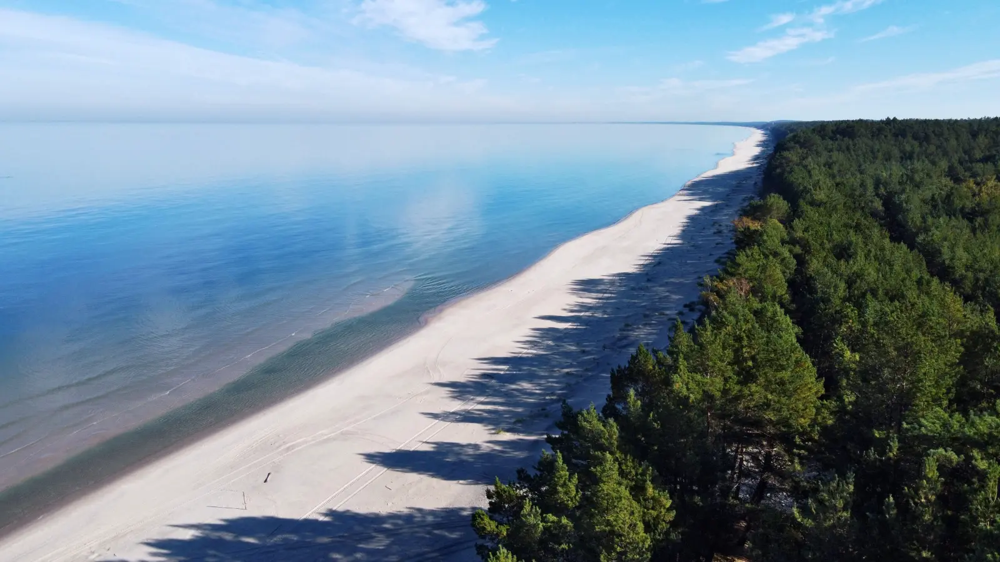

Dunes, empty beaches and fresh fish straight from the cutter. Slow travel along the Polish coast — from the Vistula Spit to Świnoujście, far from the summer crowds.
Why the Baltic off-season
In July and August, the Baltic can overwhelm. Crowded promenades, windbreaks lining the beach from shore to horizon, restaurant queues. But from September — and especially from October to April — the coast becomes a different world. The beaches breathe, the wind clears not only the air but your thoughts, and prices drop by half.
This is not to say the Baltic in winter is empty or bleak. Quite the opposite: it is the season of storms, which are a spectacle in themselves, of freshly smoked fish bought straight from the cutter, of long walks on beaches where no one else is around except gulls and cormorants. Many Poles discover the Baltic off-season only after forty — and stay with it forever.
Where to go
The Polish coast splits into three distinct stretches: the Vistula Spit (east, near the Russian border), the Central Coast (from Gdańsk to Darłowo), and the Western Coast (from Darłowo to Świnoujście). Each has its own character.
Vistula Spit
- Krynica Morska — the largest resort on the Spit, with a lighthouse and a wide beach. Off-season it is a quiet, sleepy town where you can genuinely rest.
- Stegna — a small fishing village with a harbour. Perfect cycling base — a cycle path runs through the Spit to Piaski and on to Krynica Morska.
- Sztutowo and the Stutthof Museum — a memorial site, a former concentration camp. A difficult visit, but essential for understanding the region's history.
- Frombork — the town of Copernicus, with a cathedral on a hill. Climbing the tower gives a view over the Vistula Lagoon and surrounding hills.
Central Coast
- Sopot — the pier, the Forest Opera, Bohaterów Monte Cassino street. Off-season Sopot keeps the elegant character of a 19th-century spa, without the tourist crowds.
- Gdańsk — the city with the largest number of monuments on the Polish coast. Long Market, the Crane, St Mary's Basilica. Winter brings a Christmas market on Targ Węglowy.
- Hel — a town at the tip of the Hel Peninsula, with a seal sanctuary and a fishing harbour. Off-season access is easier, and you may meet only anglers on the beach.
- Łeba and Słowiński National Park — moving dunes that shift by up to 10 metres a year. Climbing the highest (Łącka Góra, 42 m) takes about an hour. Off-season the park is nearly empty.
Western Coast
- Kołobrzeg — a large spa resort with a lighthouse and harbour. Off-season, many sanatoria remain open, so the town does not shut down entirely.
- Darłowo — a small town with a Pomeranian dukes' castle and a fishing port. Less famous than Kołobrzeg, and consequently quieter.
- Świnoujście — at the very west, with Poland's tallest lighthouse (68 m). The city sits on 44 islands, and local ferries are part of public transport.
- Wolin National Park — on Wolin island, with cliffs, a bison enclosure and a viewpoint over the Szczecin Lagoon.
When to go
The Baltic off-season is not one month — each season gives a different experience.
- September — the sea is still warm (up to 18°C), but crowds have gone. Often the best month to visit — you can still swim, and beaches are almost empty.
- October and November — storm season and amber season. After a storm, you can find pieces on the beach you would never see in summer. Cold water, but the air stays mild.
- December and January — Christmas markets in Gdańsk and Szczecin, empty beaches, lowest prices of the year. Be prepared for wind and chill, but this is the most authentic Baltic.
- February and March — the end of winter, the sea sometimes freezes at the shore. This is seal time on the Vistula Spit and around Hel. Excellent for photographers.
- April and May — the coast wakes up, spring is in the air. Downside: May brings school trips.
July and August are best avoided, unless you like crowds and windbreaks. If you must visit in summer — choose smaller places (Stegna, Jastrzębia Góra, Dąbki) rather than the big resorts.
Getting there
The coast is well connected to the rest of Poland, though conditions vary by stretch.
- By car: Warsaw to Gdańsk ~4 hours (S7), to Kołobrzeg ~6 hours, to Świnoujście ~7 hours. The S6 expressway (bypassing the Tricity and the coast) has cut travel times considerably in recent years.
- By train: direct connections from most major cities to Gdańsk, Gdynia, Sopot, Słupsk, Koszalin, Kołobrzeg and Szczecin. Smaller places (Stegna, Krynica Morska, Hel) require a change — usually in Gdańsk or Gdynia.
- By bus: Flixbus and regional operators serve the main resorts. To the Vistula Spit and Hel Peninsula, buses run from Gdańsk, though off-season timetables are sparse.
- By plane: Gdańsk airport (GDN) has connections across Europe. From the airport to central Gdańsk ~30 min by SKM train or bus.
Along the coast, the SKM (Fast Urban Railway) runs on the Gdańsk–Gdynia–Wejherowo line. It is the most convenient way to move around the Tricity without a car.
How much time you need
A weekend (2–3 days) is enough for one place — e.g. Gdańsk plus Sopot, or the Vistula Spit. A good format for a quick off-season reset.
A week lets you cover a stretch of coast — e.g. Gdańsk, Sopot, Hel, Łeba and Słowiński National Park. The most sensible length for a first visit.
Two weeks means driving the whole Polish coast — from Świnoujście to Krynica Morska, stopping in several places for longer. A car is almost essential (there is no single railway running the length of the coast).
What to eat and where to sleep
Baltic cuisine is mostly fish — but not only.
- Herring in oil, vinegar or cream — a classic, available at every fry shop and fishmonger. Best in small fishing harbours.
- Smoked salmon, eel, mackerel — straight from smokehouses by the harbour. Buy where you see smoke and a queue of locals.
- Fried flounder — a truly Baltic fish, available from May to October. Off-season it is usually frozen.
- Fish soup — in various styles: with tomatoes, with cream, with potatoes. Warms you after a winter walk.
- Kashubian cuisine — in Kashubia (around Gdynia, Kartuzy, Kościerzyna), try ruchanki (yeast pancakes) and kiszka z kaszy i krwi (blood and buckwheat sausage).
Accommodation: the Tricity has plenty of hotels and apartments, but off-season check guesthouses in Sopot and Gdynia-Orłowo (prices drop 40–60%). On the Vistula Spit — Krynica Morska, Stegna, Jantar. Central Coast — Łeba, Ustka, Darłowo. West — Kołobrzeg, Międzyzdroje, Świnoujście. Off-season many guesthouses are closed — check in advance that your place is open.
Practical tips
- Storms — frequent from October to March. Check the forecast before heading to the beach. Do not walk on breakwaters or cliffs during a storm — people die every year.
- Amber — the best time to hunt is the first hours after a storm, especially on the Vistula Spit and around Ustka. It takes patience, but beautiful pieces do turn up.
- Seals — in winter and early spring you may spot seals near the shore. Watch from a distance (at least 30 m), do not approach, do not feed. The Hel seal sanctuary runs a conservation programme.
- Signal — good along the coast, but there are dead zones in Słowiński National Park and on the Hel Peninsula.
- Paid beaches — in summer, some stretches charge entry (~5 PLN), but off-season all are free.
- Wind — even in April and October it can be very cold. Bring a windproof jacket and a hat, even if the forecast shows 15°C.
- Bookings — off-season most places do not need booking, but check that your chosen restaurant or guesthouse is not closed for winter.